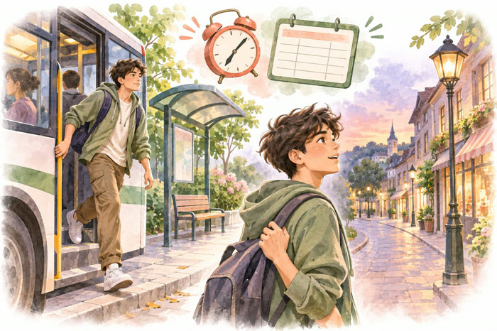

Listen to the text
Speed:

I am a person of habit. I get up at 6.45 every day. I have porridge for breakfast, and I always leave the house at 7.30. I take the same bus, sit in the same seat and listen to the same playlist. My friends laugh at me, but I like it. When everything is planned, nothing can go wrong. At least, I thought so until last Thursday. On Thursday morning my alarm clock didn't ring. I woke up at 7.40, and for a moment I didn't understand what was happening. Then I jumped out of bed. While I was looking for my socks, I was brushing my teeth. I didn't have breakfast. I ran to the bus stop and saw my bus. It was turning the corner. So I walked. I usually see this street from the bus window, and I have never noticed much. That morning I saw everything. An old man was feeding pigeons near the bakery. Two little boys were carrying a huge model of a ship to school. A woman was painting the door of her shop bright yellow. The air smelt of fresh bread and wet leaves. Near the park I met Yustyna, a girl from the parallel class. We have studied in the same school for nine years, but we have never talked. She was walking a big white dog. "Do you always walk to school?" I asked. "Every day," she said. "The bus is faster, but I think better when I walk." We talked all the way. I found out that she writes stories, plays the ukulele and wants to become a vet. She found out that I collect old maps and know all the bus routes in our town by heart. She didn't laugh. She said it was cool. I was ten minutes late for the first lesson. The teacher was already explaining a new topic, and everybody was writing. I got a remark in my diary, the first one in my life. In the evening my mother asked, "How was your day?" I usually answer, "Fine." That evening I talked for half an hour. I still get up at 6.45, and I still eat porridge. But now I leave the house at 7.15 and walk. Yustyna and her dog are waiting for me at the park gate at this very moment. I have changed one habit, and I have got a friend.
Tap any sentence to hear it again.
Сподобалось? На сайті ще більше матеріалів для вчителів!
Reader, презентації, ігри, діагностичні та контрольні роботи до підручників 1-11 класів.
Перейти на сайт materials.allaenglish.com